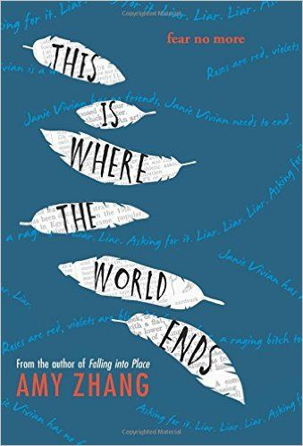
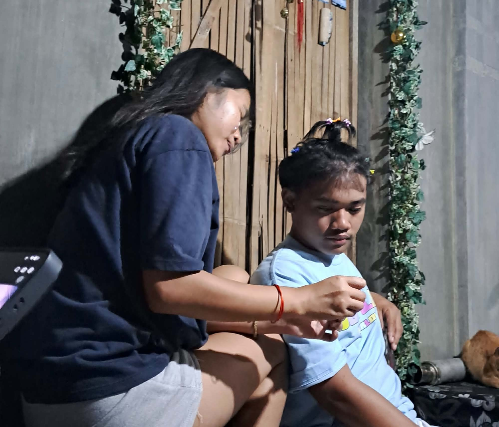
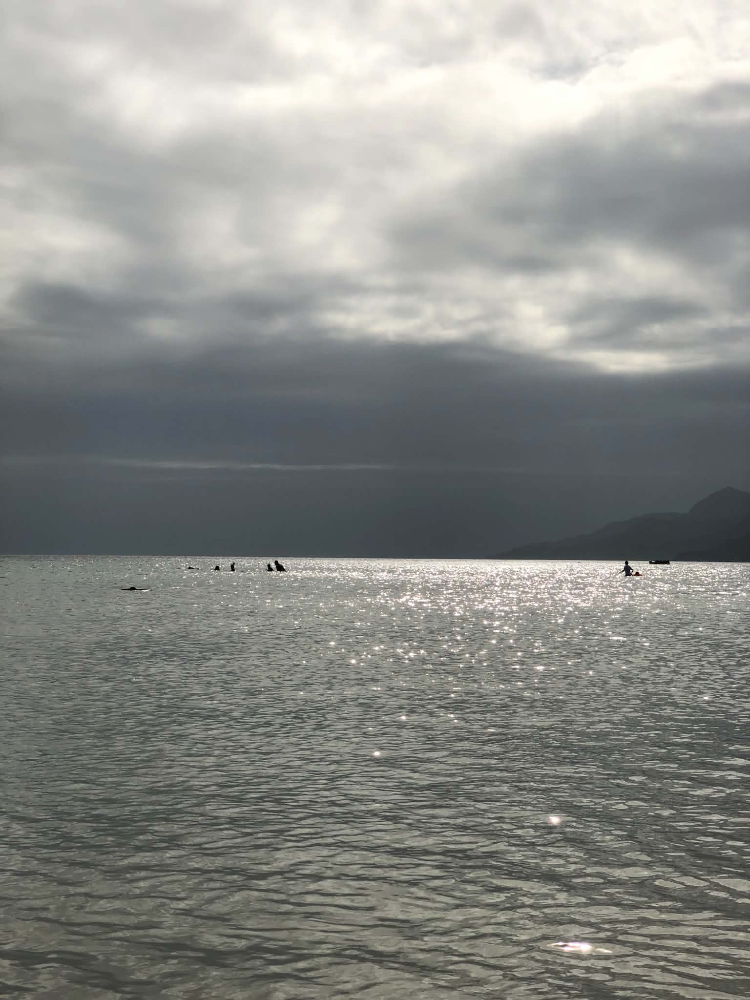
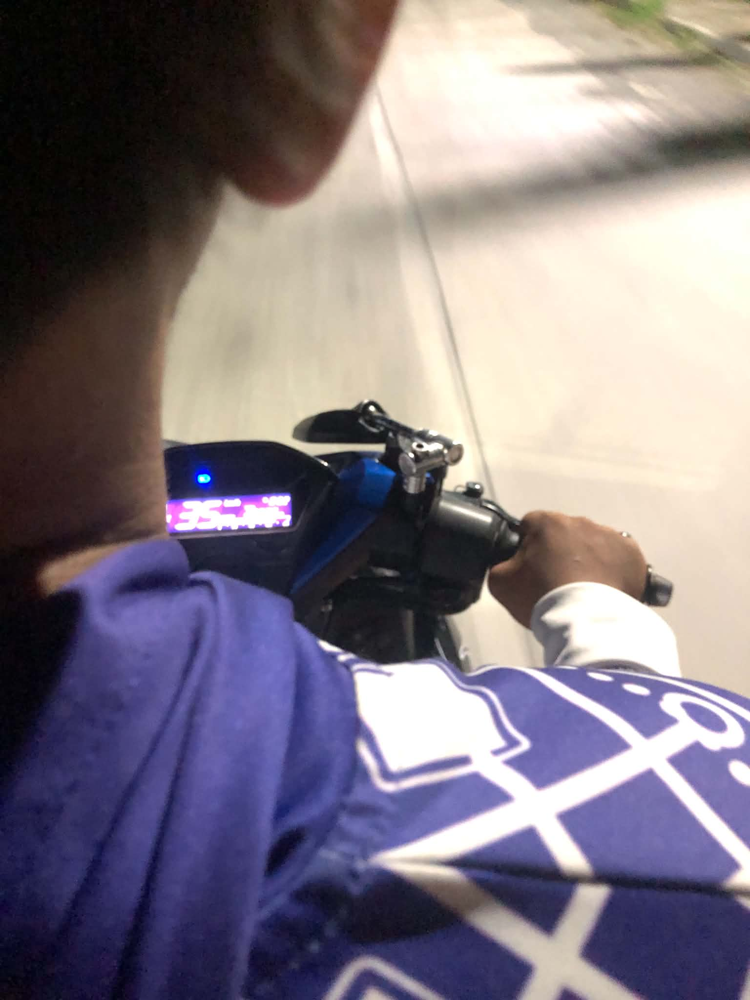
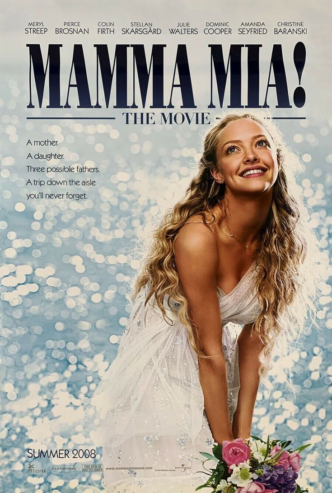
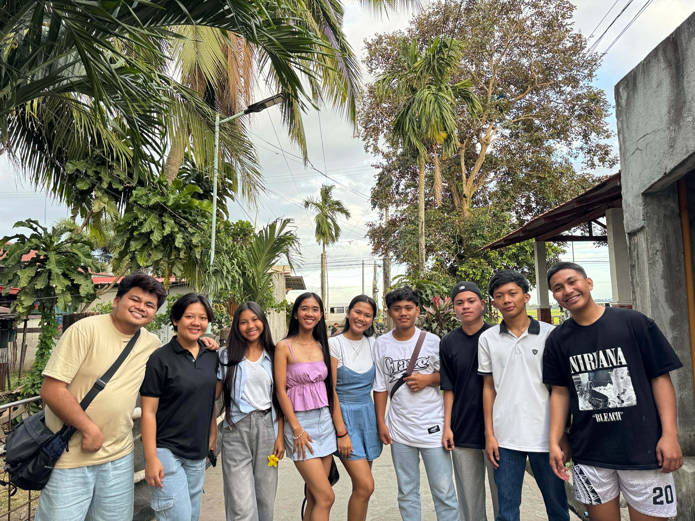
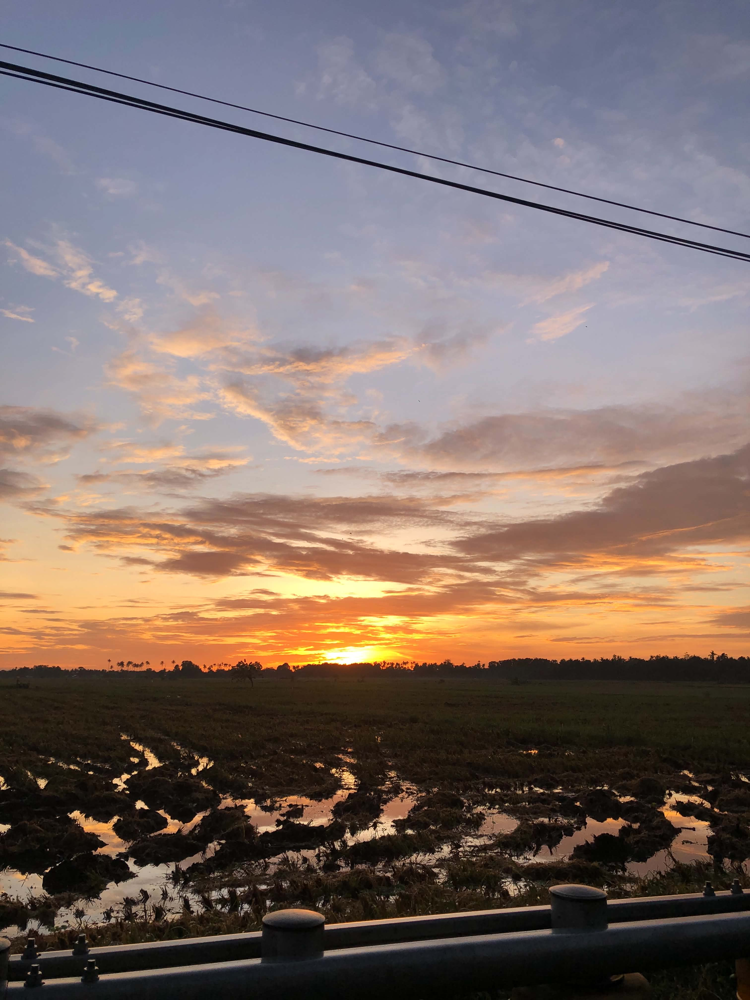
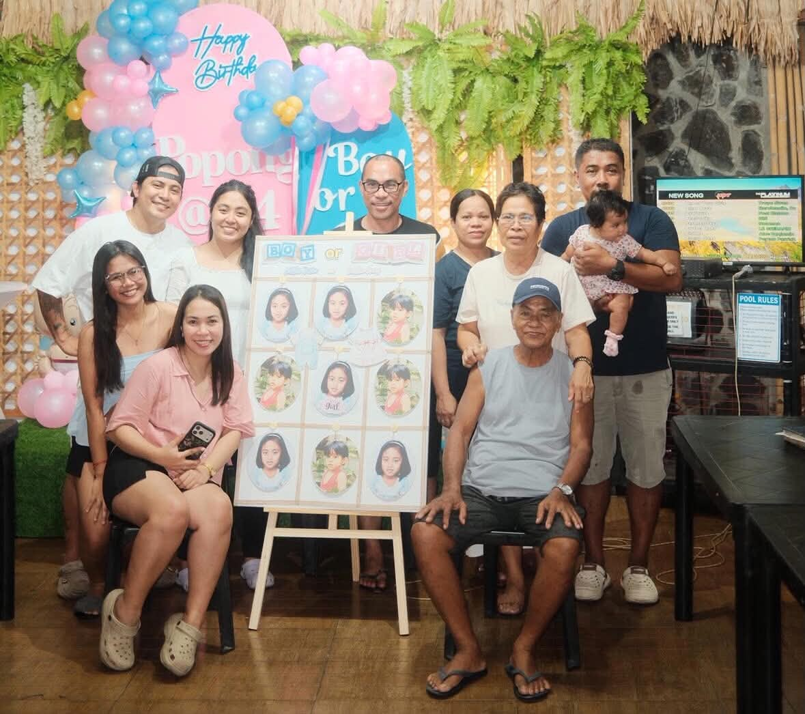

01 / MUSIC
Music
A song that brings peace to me, and make ordinary moments memorable.
A COLLECTION OF LITTLE LOVES
A collection of things that make me happy, inspire me, and feel like me.
♡ made of little favorites ♡Little details that make my world special.
01 / MUSIC
A song that brings peace to me, and make ordinary moments memorable.
02 / FAVORITE COLORS
From deep navy to soft baby blue, these shades bring a sense of calm.
03 / BOOKS

"This Is Where the World Ends" is my favorite because of its unforgettable plot twist — it completely changes everything you thought you knew. It’s unexpected, heartbreaking, and makes the whole story hit so much harder.
"Forgetting is the easy part. This should be unsurprising, but it surprises me. Forgetting was easy. Remembering is endless and it hurts, endlessly." - Micah Carter04 / COMFORT FAVORITES
A few little things that make an ordinary day feel a little more special.

Favorite Comfort Person

Salt air and Ocean Breeze

Escape in Progress
05 / MOVIES & SHOWS

I love this movie because of its heartwarming storyline and the catchy, timeless songs that make every moment feel so joyful and alive. It’s full of love, friendship, and pure happiness!
But i won't feel blue, Like I always do 'Cause somewhere in the crowd there's YOU ♡06 / SIMPLE JOYS
The little moments that make life feel softer, brighter, and more meaningful.

Cousins are the friends life gives you — and I’m so glad I have mine.

Sunrise — a new day, a fresh start.

Family is where my heart feels most at home.
It's the little things that matter the most.
♡